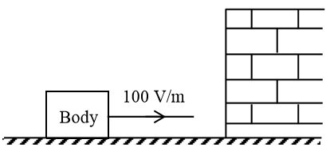

⚡ Thermal Physics
108
Total Questions
5
Years
5
Clusters
Question Clusters
PHY-THERPHYS-KTG_GAS_LAWS
Thermal Physics: Kinetic Theory of Gases & Gas Laws
PHY-THERPHYS-THERMAL_EXPANSION_CALORIMETRY
Thermal Physics: Thermal Expansion & Calorimetry
PHY-THERPHYS-HEAT_ENGINE_CARNOT
Thermal Physics: Carnot Engine & Efficiency
PHY-THERPHYS-THERMODYNAMICS_PROCESSES
Thermal Physics: Thermodynamic Processes & Work Done
PHY-THERPHYS-HEAT_TRANSFER_CONDUCTION_RADIATION
Thermal Physics: Conduction, Stefan's Law & Newton's Cooling
Year-wise Frequency
| Year | Questions | Frequency |
|---|---|---|
| 2021 | 43 | |
| 2022 | 23 | |
| 2023 | 20 | |
| 2024 | 18 | |
| 2025 | 4 |
Questions
Showing first 50 of 108 questions.
Q9 (2021 Shift 2)
Due to cold weather, a 1 m water pipe of cross-sectional area 1 cm2 is filled with ice at -10 °C . Resistive heating is used to melt the ice. Current of is passed through resistance. Assuming that all the heat 0 . 5 A 4 kΩ produced is used for melting, what is the minimum time required? (Given latent heat of fusion for water/ice = 3 . 33 × 105 J kg-1, specific heat of ice = 2 × 103 J kg-1 °C-1 and density of ice 103 m-3 = kg )
PHY-2021-0101-S2-Q009
Q18 (2021 Shift 2)
The temperature of an ideal gas in three dimensions is 300 K . The corresponding de-Broglie wavelength of the electron approximately at 300 K is: 𝑚𝑒= mass of electron = 9 × 10-31 kg, ℎ= Planck constant = 6 . 6 × 10-34 J s, 𝑘𝐵= Boltzmann constant = 1 . 38 × 10-23 J K-1
PHY-2021-0101-S2-Q018
Q28 (2021 Shift 2)
The temperature of 3 . 00 mol of an ideal diatomic gas is increased by 40 . 0°C without changing the pressure of the gas. The molecules in the gas rotate but do not oscillate. If the ratio of change in internal energy of the 𝑥 gas to the amount of workdone by the gas is 10 . Then the value of 𝑥 (round off to the nearest integer) is _________ . ( Given𝑅= 8 . 31 J mol-1 K-1
Answer:
25PHY-2021-0101-S2-Q028
Q7 (2021 Shift 2)
Calculate the value of the mean free path (λ) for oxygen molecules at temperature 27°C and pressure 1. 01 × 105 Pa . Assume the molecular diameter 0. 3 nm and the gas is ideal. (k = 1. 38 × 10−23 J K−1)
PHY-2021-0101-S2-Q007
Q26 (2021 Shift 2)
For an ideal heat engine, the temperature of the source is 127°C . In order to have 60% efficiency the temperature of the sink should be __________ ∘C . (Round off to the nearest integer)
Answer:
-113PHY-2021-0101-S2-Q026
Q7 (2021 Shift 1)
Two identical metal wires of thermal conductivities K1 and K2 respectively are connected in series. The effective thermal conductivity of the combination is: 2 K1 K2 K1+K2
PHY-2021-0101-S1-Q007
Q9 (2021 Shift 1)
A polyatomic ideal gas has 24 vibrational modes. What is the value of γ?
PHY-2021-0101-S1-Q009
Q10 (2021 Shift 1)
Two ideal polyatomic gases at temperatures T1 and T2 are mixed so that there is no loss of energy. If F1 and F2, m1 and m2, n1 and n2 be the degrees of freedom, masses, number of molecules of the first and second gas respectively, the temperature of mixture of these two gases is:
PHY-2021-0101-S1-Q010
Q6 (2021 Shift 1)
The −V diagram of a diatomic ideal gas system going under cyclic process as shown in figure. The work P done during an adiabatic process CD is (use γ = 1. 4) :
PHY-2021-0101-S1-Q006
Q7 (2021 Shift 1)
What will be the average value of energy along one degree of freedom for an ideal gas in thermal equilibrium at a temperature T ? ( kB is Boltzmann constant)
PHY-2021-0101-S1-Q007
Q8 (2021 Shift 2)
For an adiabatic expansion of an ideal gas, the fractional change in its pressure is equal to (where γ is the ratio of specific heats):
PHY-2021-0101-S2-Q008
Q9 (2021 Shift 2)
An ideal gas in a cylinder is separated by a piston in such a way that the entropy of one part is S1 and that of the other part is S2 . Given that S1 > S2 . If the piston is removed then the total entropy of the system will be:
PHY-2021-0101-S2-Q009
Q10 (2021 Shift 2)
Consider a sample of oxygen behaving like an ideal gas. At 300 K , the ratio of root-mean-square (RMS) velocity to the average velocity of the gas molecule would be : (Molecular weight of oxygen is mol−1; K−1 mol−1 ) 32 g R = 8. 3 J
PHY-2021-0101-S2-Q010
Q7 (2021 Shift 1)
The amount of heat needed to raise the temperature of 4 moles of a rigid diatomic gas from 0 °C to 50 °C when no work is done is (R is the universal gas constant)
PHY-2021-0101-S1-Q007
Q8 (2021 Shift 1)
The entropy of any system is given by, S = α2β ln[ μ Jβ2 kR + 3] where α and β are the constants. μ, J, k and R are number of moles, mechanical equivalent of heat, Boltzmann's constant and gas constant, respectively. [Take S = dQ ] T Choose the incorrect option from the following:
PHY-2021-0101-S1-Q008
Q25 (2021 Shift 1)
In the reported figure, heat energy absorbed by a system in going through a cyclic process is ______ πJ.

Answer:
100PHY-2021-0101-S1-Q025
Q11 (2021 Shift 2)
Which of the following graphs represent the behaviour of an ideal gas? Symbols have their usual meaning.

PHY-2021-0101-S2-Q011
Q12 (2021 Shift 2)
The correct relation between the degrees of freedom f and the ratio of specific heat γ is:
PHY-2021-0101-S2-Q012
Q9 (2021 Shift 1)
Match List I with List II . List I List II
PHY-2021-0101-S1-Q009
Q10 (2021 Shift 1)
𝑛 mole of a perfect gas undergoes a cyclic process 𝐴𝐵𝐶𝐴 (see figure) consisting of the following processes. 𝐴→𝐵: Isothermal expansion at temperature 𝑇 so that the volume is doubled from 𝑉1 to 𝑉2 = 2𝑉1 and pressure changes from 𝑃1 to 𝑃2 𝐵→𝐶: Isobaric compression at pressure 𝑃2 to initial volume 𝑉1 . 𝐶→𝐴: Isochoric change leading to change of pressure from 𝑃2 to 𝑃1 Total work done in the complete cycle 𝐴𝐵𝐶𝐴 is:
PHY-2021-0101-S1-Q010
Q5 (2021 Shift 2)
If one mole of an ideal gas at is allowed to expand reversibly and isothermally ( to ) its pressure is (P1, V1) A B reduced to one-half of the original pressure (see figure). This is followed by a constant volume cooling till its pressure is reduced to one-fourth of the initial value (B →C). Then it is restored to its initial state by a reversible adiabatic compression ( to ). The net workdone by the gas is equal to: C A
PHY-2021-0101-S2-Q005
Q8 (2021 Shift 1)
A diatomic gas, having CP = 7 2 R and CV = 5 2 R, is heated at constant pressure. The ratio dU : dQ : dW
PHY-2021-0101-S1-Q008
Q24 (2021 Shift 1)
A monoatomic gas of mass 4. 0 u is kept in an insulated container. The container is moving with velocity 30 m s−1 . If the container is suddenly stopped then a change in temperature of the gas ( R = gas constant) is 3R x . Value of is, x
Answer:
3600PHY-2021-0101-S1-Q024
Q4 (2021 Shift 2)
Thermodynamic process is shown below on a P −V diagram for one mole of an ideal gas. If V2 = 2V1 , then the ratio of temperature T2 is : T1
PHY-2021-0101-S2-Q004
Q24 (2021 Shift 2)
A reversible heat engine converts one-fourth of the heat input into work. When the temperature of the sink is reduced by its efficiency is doubled. The temperature in Kelvin of the source will be ___ . 52 K,

Answer:
208PHY-2021-0101-S2-Q024
Q7 (2021 Shift 1)
Two different metal bodies 𝐴 and 𝐵 of equal mass are heated at a uniform rate under similar conditions. The variation of temperature of the bodies is graphically represented as shown in the figure. The ratio of specific heat capacities is: 8 3

PHY-2021-0101-S1-Q007
Q8 (2021 Shift 1)
A monoatomic ideal gas, initially at temperature 𝑇1 is enclosed in a cylinder fitted with a frictionless piston. The gas is allowed to expand adiabatically to a temperature 𝑇2 by releasing the piston suddenly. If 𝑙1 and 𝑙2 are the lengths of the gas column, before and after the expansion respectively, then the value of 𝑇1 will be: 𝑇2
PHY-2021-0101-S1-Q008
Q8 (2021 Shift 2)
A heat engine has an efficiency of 1 . When the temperature of sink is reduced by 62°C , its efficiency get 6 doubled. The temperature of the source is :
PHY-2021-0101-S2-Q008
Q17 (2021 Shift 1)
A particular hydrogen like ion emits radiation of frequency 2. 92 × 1015 Hz when it makes transition from n = 3 to n = 1 . The frequency in Hz of radiation emitted in transition from n = 2 to n = 1 will be:
PHY-2021-0101-S1-Q017
Q9 (2021 Shift 2)
A refrigerator consumes an average 35 W power to operate between temperature −10°C to 25°C . If there is no loss of energy then how much average heat per second does it transfer?
PHY-2021-0101-S2-Q009
Q9 (2021 Shift 2)
The internal energy (U) , pressure (P) and volume (V ) of an ideal gas are related as U = 3PV + 4. The gas is
PHY-2021-0101-S2-Q009
Q22 (2021 Shift 2)
1 mole of rigid diatomic gas performs a work of 5 when heat Q is supplied to it. The molar heat capacity of the gas during this transformation is xR . The value of x is 8 [ R universal gas constant]
Answer:
25PHY-2021-0101-S2-Q022
Q23 (2021 Shift 2)
The volume of a given mass of monoatomic gas changes with temperature according to the relation V T V = KT 2 3 . The workdone when temperature changes by 90 K will be xR . The value of x is [ R universal gas constant ]
Answer:
60PHY-2021-0101-S2-Q023
Q7 (2021 Shift 1)
An ideal gas is expanding such that PT 3 = constant. The coefficient of volume expansion of the gas is:
PHY-2021-0101-S1-Q007
Q6 (2021 Shift 2)
The height of victoria's falls is 63 m . What is the difference in the temperature of water at the top and at the bottom of the fall? [Given 1 cal = 4. 2 J and specific heat of water = 1 cal g−1 ∘C−1]
PHY-2021-0101-S2-Q006
Q23 (2021 Shift 2)
A heat engine operates between a cold reservoir at temperature T2 = 400 K and a hot reservoir at temperature T1 . It takes 300 J of heat from the hot reservoir and delivers 240 J of heat to the cold reservoir in a cycle. The minimum temperature of the hot reservoir has to be
Answer:
500PHY-2021-0101-S2-Q023
Q8 (2021 Shift 1)
In the reported figure, there is a cyclic process ABCDA on a sample of 1 mol of a diatomic gas. The temperature of the gas during the process A →B and C →D are T1 and T2( T > T2) respectively. 1 Choose the correct option out of the following for work done if processes BC and DA are adiabatic.
PHY-2021-0101-S1-Q008
Q9 (2021 Shift 1)
The number of molecules in one litre of an ideal gas at 300 K and 2 atmospheric pressure with mean kinetic 10−9 energy 2 × J per molecule is:
PHY-2021-0101-S1-Q009
Q10 (2021 Shift 2)
Two Carnot engines A and B operate in series such that engine A absorbs heat at T1 and rejects heat to a sink at temperature T . Engine B absorbs half of the heat rejected by Engine A and rejects heat to the sink at T3 . When workdone in both the cases is equal, to value of T is :
PHY-2021-0101-S2-Q010
Q9 (2021 Shift 1)
For an ideal gas the instantaneous change in pressure P with volume V is given by the equation dP = −aP. If dV P = P0 at V = 0 is the given boundary condition, then the maximum temperature one mole of gas can attain is: (Here R is the gas constant)
PHY-2021-0101-S1-Q009
Q8 (2021 Shift 2)
Two thin metallic spherical shells of radii 𝑟1 and 𝑟2𝑟1 < 𝑟2 are placed with their centres coinciding. A material of thermal conductivity 𝐾 is filled in the space between the shells. The inner shell is maintained at temperature 𝜃1 and the outer shell at temperature 𝜃2𝜃1 < 𝜃2 . The rate at which heat flows radially through the material is :
PHY-2021-0101-S2-Q008
Q17 (2021 Shift 2)
Consider two separate ideal gases of electrons and protons having same number of particles. The temperature of both the gases are same. The ratio of the uncertainty in determining the position of an electron to that of a proton is proportional to:
PHY-2021-0101-S2-Q017
Q22 (2021 Shift 2)
A sample of gas with 𝛾= 1 . 5 is taken through an adiabatic process in which the volume is compressed from 1200 cm3 to 300 cm3 . If the initial pressure is 200 kPa . The absolute value of the workdone by the gas in the process = ________ J .

Answer:
480PHY-2021-0101-S2-Q022
Q1 (2022 Shift 1)
Identify the pair of physical quantities which have different dimensions:
PHY-2022-0101-S1-Q001
Q8 (2022 Shift 1)
Two metallic blocks M1 and M2 of same area of cross-section are connected to each other (as shown in figure). If the thermal conductivity of M2 is K then the thermal conductivity of M1 will be : [Assume steady state heat conduction]
PHY-2022-0101-S1-Q008
Q9 (2022 Shift 1)
A Carnot engine whose heat sinks at 27°C , has an efficiency of 25% . By how many degrees should the temperature of the source be changed to increase the efficiency by 100% of the original efficiency ?
PHY-2022-0101-S1-Q009
Q7 (2022 Shift 2)
A 100 g of iron nail is hit by a 1. 5 kg hammer striking at a velocity of 60 ms−1 . What will be the rise in the temperature of the nail if one fourth of energy of the hammer goes into heating the nail ? [Specific heat capacity of iron = 0. 42 Jg−1 ∘C−1 ]
PHY-2022-0101-S2-Q007
Q22 (2022 Shift 2)
In an experiment to verify Newton's law of cooling. a graph is plotted between. the temperature difference (ΔT) of the water and surroundings and time as shown in figure. The initial temperature of water is taken as . The value of as mentioned in the graph will be 80°C t2 Q

Answer:
16PHY-2022-0101-S2-Q022
Q23 (2022 Shift 2)
A monoatomic gas performs a work of 4 where Q is the heat supplied to it. The molar heat capacity of the gas will be _____ R during this transformation. Where R is the gas constant.
Answer:
2PHY-2022-0101-S2-Q023
Q25 (2022 Shift 1)
A steam engine intakes 50 g of steam at 100°C per minute and cools it down to 20°C. If latent heat of vaporization of steam is 540 cal g-1, then the heat rejected by the steam engine per minute is _____ × 103 cal (Given : specific heat capacity of water : 1 cal g-1∘C-1)
Answer:
31PHY-2022-0101-S1-Q025